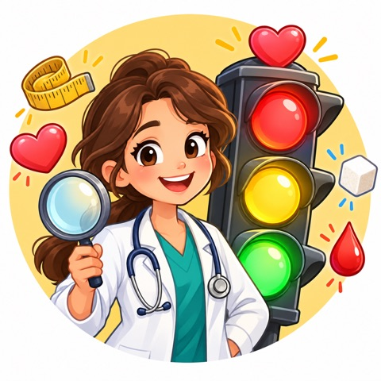

<!doctype html>
<html lang="es">
<head>
<meta charset="utf-8">
<!--LOCAL--><meta name="viewport" content="width=device-width, initial-scale=1, viewport-fit=cover"><!--/LOCAL-->
<title>Semáforo del Corazón</title>
<meta name="claude:viewport-fit-sides" content="cover">
<meta name="theme-color" content="#fff7ec">
<link rel="preconnect" href="https://fonts.googleapis.com">
<link href="https://fonts.googleapis.com/css2?family=Baloo+2:wght@600;700;800&family=Nunito:wght@500;700;800&display=swap" rel="stylesheet">
<!--LOCAL--><style>:root{padding-top:env(safe-area-inset-top,0px);padding-bottom:env(safe-area-inset-bottom,0px)}[hidden]{display:none!important}</style><!--/LOCAL-->
<style>
/* Layout: columna de móvil a pantalla completa — cabecera fija, contenido que scrollea, acciones abajo al alcance del pulgar */
:root{
  --bg:#fff7ec; --card:#ffffff; --ink:#2b2340; --muted:#6f6787; --line:#ece2d3; --soft:#f7f0e6;
  --verde:#22b06a; --amarillo:#f5b400; --rojo:#e8474a; --morado:#6f4ef2; --morado-sombra:#5132cf; --noche:#2b2340;
  --tinta-amarillo:#4a3600;
  --display:"Baloo 2", "Arial Rounded MT Bold", system-ui, sans-serif;
  --texto:Nunito, system-ui, -apple-system, "Segoe UI", sans-serif;
  --r:18px; --gutter:max(16px, env(safe-area-inset-left, 0px));
}
*{box-sizing:border-box;-webkit-tap-highlight-color:transparent}
html,body{height:100%;margin:0}
body{background:var(--bg);color:var(--ink);font-family:var(--texto);font-size:16px;line-height:1.4;overflow:hidden;touch-action:manipulation}
h1,h2,h3{font-family:var(--display);margin:0;line-height:1.1;text-wrap:balance}
button{font:inherit;color:inherit;border:0;background:none;cursor:pointer;padding:0}
button:focus-visible,input:focus-visible,summary:focus-visible{outline:3px solid var(--morado);outline-offset:2px}
img{max-width:100%}

#app{height:100%;max-width:460px;margin:0 auto;display:flex;flex-direction:column;background:var(--bg)}
@media (min-width:500px){ #app{box-shadow:0 0 0 1px var(--line),0 20px 60px rgba(43,35,64,.12)} body{background:#f1e8db} }
.top{flex:none;padding:10px max(16px, env(safe-area-inset-right, 0px)) 8px max(16px, env(safe-area-inset-left, 0px))}
.main{flex:1;overflow-y:auto;overflow-x:hidden;-webkit-overflow-scrolling:touch;
  padding-block:4px 16px;padding-left:max(16px, env(safe-area-inset-left, 0px));padding-right:max(16px, env(safe-area-inset-right, 0px));
  display:flex;flex-direction:column;gap:14px}
.main>*{flex-shrink:0}
.main.centrado{justify-content:center;text-align:center}
.pie{flex:none;padding-block:12px 14px;padding-left:max(16px, env(safe-area-inset-left, 0px));padding-right:max(16px, env(safe-area-inset-right, 0px));
  display:grid;gap:10px;border-top:1px solid var(--line);background:var(--bg)}
.pie.dos{grid-template-columns:1fr 1fr}

/* HUD */
.hud{display:grid;grid-template-columns:1fr 2fr 1fr;align-items:center;gap:12px}
.hud .vidas{font-size:18px;letter-spacing:1px;white-space:nowrap}
.hud .puntos{text-align:right;font-family:var(--display);font-weight:800;font-size:20px;font-variant-numeric:tabular-nums;line-height:1}
.hud .puntos small{display:block;font-family:var(--texto);font-size:11px;color:var(--muted);font-weight:800;letter-spacing:.04em}
.barra{height:8px;background:var(--line);border-radius:99px;overflow:hidden}
.barra i{display:block;height:100%;background:var(--morado);border-radius:99px;transition:width .4s}

/* botones */
.btn{display:flex;align-items:center;justify-content:center;gap:8px;min-height:54px;padding:0 18px;border-radius:16px;
  font-weight:800;font-size:17px;background:var(--morado);color:#fff;box-shadow:0 4px 0 var(--morado-sombra);transition:transform .08s,box-shadow .08s}
.btn:active{transform:translateY(3px);box-shadow:0 1px 0 var(--morado-sombra)}
.btn.sec{background:var(--card);color:var(--ink);box-shadow:inset 0 0 0 2px var(--line),0 4px 0 var(--line)}
.btn.sec:active{box-shadow:inset 0 0 0 2px var(--line),0 1px 0 var(--line)}
.eyebrow{font-size:12px;font-weight:800;letter-spacing:.08em;text-transform:uppercase;color:var(--morado)}
.muted{color:var(--muted)}

/* portada */
.hero{width:min(260px,68vw);aspect-ratio:1;max-width:100%;margin:0 auto;border-radius:50%;object-fit:cover;background:var(--card)}
.portada h1{font-size:44px;margin-top:6px}
.portada h1 span{color:var(--rojo)}
.luces{display:flex;justify-content:center;gap:8px}
.luces b{width:14px;height:14px;border-radius:50%}
.luces b:nth-child(1){background:var(--verde)}.luces b:nth-child(2){background:var(--amarillo)}.luces b:nth-child(3){background:var(--rojo)}
.portada p{margin:0 auto;max-width:30ch;font-size:17px}
.legal{font-size:12px;color:var(--muted);text-align:center}

/* tutorial */
.pasos{display:flex;justify-content:center;gap:6px}
.pasos i{width:8px;height:8px;border-radius:50%;background:var(--line)}
.pasos i.on{background:var(--morado);width:22px;border-radius:99px}
.tuto h2{font-size:28px;text-align:center}
.tuto .intro{text-align:center;margin:0 auto;max-width:32ch}
.lista{display:grid;gap:8px}
.item{display:grid;grid-template-columns:44px 1fr auto;align-items:center;gap:10px;background:var(--card);border-radius:var(--r);padding:10px 14px;box-shadow:inset 0 0 0 2px var(--line)}
.item .ico{font-size:26px;text-align:center}
.item b{display:block;font-size:16px}
.item small{display:block;color:var(--muted);font-size:13px}
.item .lim{font-weight:800;font-size:13px;color:var(--rojo);text-align:right;white-space:nowrap}
.duo{display:grid;grid-template-columns:1fr 1fr;gap:10px}
.mini{background:var(--card);border-radius:var(--r);padding:12px;text-align:center;box-shadow:inset 0 0 0 2px var(--line)}
.mini img{width:84px;height:84px;border-radius:50%;object-fit:cover;display:block;margin:0 auto 6px}
.mini b{display:block;font-family:var(--display);font-size:18px}
.mini small{display:block;color:var(--muted);font-size:13px}
.mini .tag{display:inline-block;margin-top:6px;padding:3px 10px;border-radius:99px;font-size:12px;font-weight:800;color:#fff}
.reglas{display:grid;gap:8px}
.regla{display:grid;grid-template-columns:44px 1fr;align-items:center;gap:12px;background:var(--card);border-radius:var(--r);padding:12px 14px;box-shadow:inset 0 0 0 2px var(--line)}
.regla .bola{width:36px;height:36px;border-radius:50%;margin:0 auto}
.regla b{display:block;font-family:var(--display);font-size:19px}
.regla small{color:var(--muted);font-size:14px}

/* paciente */
.paciente{display:grid;grid-template-columns:76px 1fr;gap:14px;align-items:center}
.avatar{width:76px;height:76px;border-radius:50%;object-fit:cover;background:var(--card);box-shadow:0 0 0 3px var(--card),0 0 0 5px var(--line)}
.paciente h2{font-size:26px}
.paciente .meta{font-size:13px;font-weight:800;color:var(--muted)}
.historia{margin:0;font-size:15px;background:var(--card);border-radius:var(--r);padding:10px 14px;box-shadow:inset 0 0 0 2px var(--line)}
.consigna{display:flex;justify-content:space-between;align-items:center;gap:10px;font-weight:800;font-size:15px}
.chuleta{font-size:13px;font-weight:800;color:var(--morado);padding:6px 10px;border-radius:99px;background:var(--soft);white-space:nowrap}

.pista{display:grid;grid-template-columns:40px 1fr auto 62px;align-items:center;gap:10px;width:100%;min-height:62px;text-align:left;
  background:var(--card);border-radius:var(--r);padding:8px 10px 8px 12px;box-shadow:inset 0 0 0 2px var(--line);transition:box-shadow .15s,background .15s,transform .08s}
.pista:active{transform:scale(.98)}
.pista>*{min-width:0}
.pista .ico{font-size:24px;text-align:center}
.pista b{display:block;font-size:15px;line-height:1.2}
.pista small{display:block;font-size:12px;color:var(--muted);line-height:1.25}
.pista small.pill{color:var(--morado);font-weight:800}
.pista .val{font-family:var(--display);font-weight:800;font-size:22px;text-align:right;font-variant-numeric:tabular-nums;line-height:1;white-space:nowrap}
.pista .val small{display:block;font-family:var(--texto);font-size:11px;font-weight:800;text-align:right;margin-top:2px}
.estado{justify-self:stretch;text-align:center;font-size:12px;font-weight:800;padding:6px 0;border-radius:99px;background:var(--soft);color:var(--muted)}
.pista.on{background:#fff1f1;box-shadow:inset 0 0 0 2px var(--rojo)}
.pista.on .estado{background:var(--rojo);color:#fff}
.pista.ok{box-shadow:inset 0 0 0 3px var(--verde)}
.pista.fallo{box-shadow:inset 0 0 0 3px var(--noche);animation:temblor .35s}
.pista[disabled]{pointer-events:none}
@keyframes temblor{25%{transform:translateX(-4px)}50%{transform:translateX(4px)}75%{transform:translateX(-2px)}}

.semaforo{display:grid;grid-template-columns:repeat(3,1fr);gap:10px}
.luz{background:var(--noche);color:#fff;border-radius:16px;padding:10px 4px 9px;text-align:center;box-shadow:0 4px 0 #15101f;transition:transform .08s}
.luz:active{transform:translateY(3px);box-shadow:0 1px 0 #15101f}
.luz .bola{width:34px;height:34px;border-radius:50%;margin:0 auto 4px}
.luz b{display:block;font-size:15px}
.luz small{display:block;font-size:11px;opacity:.75;font-weight:700}
.verde .bola,.bola.verde{background:var(--verde)} .amarillo .bola,.bola.amarillo{background:var(--amarillo)} .rojo .bola,.bola.rojo{background:var(--rojo)}
.luz[disabled]{pointer-events:none}
.luz.apagada{opacity:.3}
.luz.elegida .bola{box-shadow:0 0 0 3px #fff}
.pie-titulo{text-align:center;font-size:13px;font-weight:800;color:var(--muted);margin-bottom:-2px}

/* duelo */
.pregunta{text-align:center}
.pregunta h2{font-size:26px}
.pregunta p{margin:4px 0 0;font-size:14px;color:var(--muted)}
.rivales{display:grid;grid-template-columns:1fr 1fr;gap:10px}
.rival{background:var(--card);border-radius:20px;padding:14px 10px;text-align:center;box-shadow:inset 0 0 0 2px var(--line),0 4px 0 var(--line);
  display:flex;flex-direction:column;align-items:center;gap:6px;transition:transform .08s}
.rival:active{transform:scale(.98)}
.rival img{width:96px;height:96px;border-radius:50%;object-fit:cover}
.rival h3{font-size:20px}
.rival .meta{font-size:12px;font-weight:800;color:var(--muted);line-height:1.3}
.puntitos{display:flex;gap:5px;justify-content:center;margin-top:2px}
.puntitos i{width:12px;height:12px;border-radius:50%;background:var(--verde)}
.puntitos i.mal{background:var(--rojo)}
.cuenta{font-size:13px;font-weight:800}
.rival.gana{box-shadow:inset 0 0 0 3px var(--rojo),0 4px 0 var(--rojo)}
.rival.elegido:not(.gana){box-shadow:inset 0 0 0 3px var(--noche),0 4px 0 var(--noche)}
.rival[disabled]{pointer-events:none}
.leyenda{display:flex;justify-content:center;gap:16px;font-size:12px;font-weight:700;color:var(--muted)}
.leyenda span{display:flex;align-items:center;gap:5px}
.leyenda i{width:10px;height:10px;border-radius:50%}

/* quiz */
.frase{font-family:var(--display);font-weight:700;font-size:24px;line-height:1.2;text-align:center;background:var(--card);border-radius:20px;padding:26px 18px;box-shadow:inset 0 0 0 2px var(--line);text-wrap:balance}
.opciones{display:grid;gap:10px}
.opcion{display:grid;grid-template-columns:32px 1fr;align-items:center;gap:10px;text-align:left;background:var(--card);border-radius:16px;padding:12px 14px;min-height:58px;font-weight:700;font-size:15px;
  box-shadow:inset 0 0 0 2px var(--line),0 3px 0 var(--line)}
.opcion .letra{width:32px;height:32px;border-radius:50%;background:var(--soft);display:grid;place-items:center;font-weight:800;color:var(--morado)}
.opcion.ok{background:#e9f8f0;box-shadow:inset 0 0 0 3px var(--verde)}
.opcion.mal{background:#fff1f1;box-shadow:inset 0 0 0 3px var(--rojo)}
.opcion[disabled],.mv[disabled]{pointer-events:none}
.mv{min-height:64px;border-radius:16px;font-family:var(--display);font-weight:800;font-size:22px;background:var(--card);box-shadow:inset 0 0 0 2px var(--line),0 4px 0 var(--line)}
.mv.ok{background:#e9f8f0;box-shadow:inset 0 0 0 3px var(--verde)}
.mv.mal{background:#fff1f1;box-shadow:inset 0 0 0 3px var(--rojo)}

/* hoja de feedback */
.velo{position:fixed;inset:0;background:rgba(30,20,50,.45);z-index:20;animation:fade .2s both}
.hoja{position:fixed;z-index:21;bottom:0;left:50%;transform:translateX(-50%);width:min(460px,100%);max-height:82%;overflow-y:auto;
  background:var(--card);border-radius:24px 24px 0 0;
  padding:8px max(18px, env(safe-area-inset-right, 0px)) calc(16px + env(safe-area-inset-bottom, 0px)) max(18px, env(safe-area-inset-left, 0px));
  display:grid;gap:12px;animation:sube .28s cubic-bezier(.2,.9,.3,1.1) both}
.hoja::before{content:"";width:40px;height:5px;border-radius:99px;background:var(--line);justify-self:center}
.hoja .franja{height:6px;border-radius:99px}
.hoja h3{font-size:26px;text-align:center}
.hoja .res{display:flex;align-items:center;justify-content:center;gap:10px;font-weight:800}
.hoja .res .bola{width:22px;height:22px;border-radius:50%;flex:none}
.hoja p{margin:0;text-align:center;font-size:15px}
details{background:var(--soft);border-radius:14px;padding:10px 14px;font-size:14px}
summary{font-weight:800;cursor:pointer;color:var(--morado)}
details p,details ul{text-align:left!important;margin:8px 0 0}
details ul{padding-left:18px}
@keyframes sube{from{transform:translate(-50%,100%)}to{transform:translate(-50%,0)}}
@keyframes fade{from{opacity:0}}

/* final */
.estrellas{font-size:44px;letter-spacing:4px;text-align:center}
.final h2{font-size:30px;text-align:center}
.marcador{display:grid;grid-template-columns:repeat(3,1fr);gap:8px}
.marcador div{background:var(--card);border-radius:var(--r);padding:10px 4px;text-align:center;box-shadow:inset 0 0 0 2px var(--line)}
.marcador b{display:block;font-family:var(--display);font-size:24px;font-variant-numeric:tabular-nums;line-height:1.1}
.marcador small{font-size:11px;font-weight:800;color:var(--muted);text-transform:uppercase;letter-spacing:.05em}
.mapa{display:grid;grid-template-columns:1fr 1fr;gap:8px}
.mapa div{border-radius:var(--r);padding:12px 10px;text-align:center;font-size:13px;font-weight:700;min-height:92px;display:flex;flex-direction:column;justify-content:center;gap:2px}
.mapa b{font-family:var(--display);font-size:16px}
.mapa .c1{background:#e3f6ec}.mapa .c2{background:#fff4d6}.mapa .c3{background:#ffe2e2}.mapa .c4{background:#ffc7c7}
.ejes{display:grid;grid-template-columns:1fr 1fr;gap:8px;text-align:center;font-size:12px;font-weight:800;color:var(--muted);text-transform:uppercase;letter-spacing:.05em}
.cita{background:var(--noche);color:#fff;border-radius:20px;padding:16px 18px;font-size:16px;text-align:center}
.cita b{color:var(--amarillo)}

/* simulador */
.sim h2{font-size:28px;text-align:center}
.grupo{background:var(--card);border-radius:20px;box-shadow:inset 0 0 0 2px var(--line);overflow:hidden}
.campo{display:grid;grid-template-columns:36px 1fr 118px;align-items:center;gap:10px;padding:10px 14px;border-top:1px solid var(--line)}
.campo:first-child{border-top:0}
.campo .ico{font-size:22px;text-align:center}
.campo label{font-weight:800;font-size:15px;line-height:1.2}
.campo label small{display:block;font-weight:600;font-size:12px;color:var(--muted)}
.entrada{display:flex;align-items:center;background:var(--soft);border-radius:12px;padding:0 10px;height:44px}
.entrada input{width:100%;min-width:0;border:0;background:none;font:inherit;font-weight:800;font-size:17px;color:var(--ink);text-align:right;outline:none}
.entrada input::placeholder{color:var(--muted);opacity:.45;font-weight:600}
.entrada span{font-size:12px;color:var(--muted);font-weight:700;margin-left:4px}
.entrada.pa input{text-align:center}
.entrada.pa span{margin:0 2px}
.seg{display:grid;grid-template-columns:1fr 1fr;background:var(--soft);border-radius:12px;padding:3px;gap:3px}
.seg button{height:38px;border-radius:9px;font-weight:800;font-size:14px;color:var(--muted)}
.seg button.on{background:var(--card);color:var(--ink);box-shadow:0 1px 4px rgba(43,35,64,.15)}
.campo.ancho{grid-template-columns:36px 1fr}
.campo.ancho .seg{grid-column:1/-1}
.chips{display:grid;grid-template-columns:1fr 1fr;gap:8px;padding:12px 14px}
.chips p{grid-column:1/-1;margin:0;font-weight:800;font-size:14px}
.chip{height:42px;border-radius:12px;background:var(--soft);font-weight:800;font-size:14px;color:var(--muted);box-shadow:inset 0 0 0 2px transparent}
.chip.on{background:#f0ebff;color:var(--morado);box-shadow:inset 0 0 0 2px var(--morado)}
.idf{display:flex;justify-content:space-between;align-items:center;gap:10px;padding:10px 14px;border-top:1px solid var(--line);font-size:13px;font-weight:700;color:var(--muted)}
.interruptor{width:46px;height:28px;border-radius:99px;background:var(--line);position:relative;flex:none;transition:background .15s}
.interruptor::after{content:"";position:absolute;top:3px;left:3px;width:22px;height:22px;border-radius:50%;background:var(--card);transition:left .15s}
.interruptor.on{background:var(--morado)} .interruptor.on::after{left:21px}
.crit{display:grid;grid-template-columns:repeat(5,1fr);gap:6px}
.crit div{background:var(--soft);border-radius:12px;padding:8px 2px;text-align:center;font-size:20px}
.crit div small{display:block;font-size:10px;font-weight:800;color:var(--muted)}
.crit div.si{background:#ffe2e2}.crit div.si small{color:var(--rojo)}
.crit div.no{background:#e3f6ec}.crit div.no small{color:var(--verde)}
.cita-doc{font-style:italic}

.toast{position:fixed;left:50%;top:calc(64px + env(safe-area-inset-top, 0px));transform:translateX(-50%);font-family:var(--display);font-weight:800;font-size:26px;color:#fff;padding:6px 18px;border-radius:99px;z-index:30;pointer-events:none;animation:flota 1s ease-out both}
@keyframes flota{0%{opacity:0;transform:translate(-50%,8px) scale(.85)}20%{opacity:1;transform:translate(-50%,0) scale(1.05)}100%{opacity:0;transform:translate(-50%,-30px)}}
canvas#confeti{position:fixed;inset:0;pointer-events:none;z-index:40}
.entra{animation:entra .3s ease both}
@keyframes entra{from{opacity:.001;transform:translateY(10px)}}
@media (prefers-reduced-motion:reduce){*{animation:none!important;transition:none!important}}
@media (max-width:360px){ .pista{grid-template-columns:32px 1fr auto 54px;gap:8px} .pista .val{font-size:19px} .campo{grid-template-columns:30px 1fr 104px} }
</style>
<!--LOCAL--></head>
<body><!--/LOCAL-->
<div id="app"></div>
<canvas id="confeti"></canvas>
<script>
"use strict";
/* ============ Las 5 pistas (criterios armonizados ATP III / IDF / AHA-NHLBI) ============ */
const PISTAS = [
  { id:"cintura", ico:"📏", nombre:"Cintura", tecnico:"Circunferencia de cintura", explica:"Grasa escondida en la barriga",
    lim:s => s==="H" ? "≥ 102 cm" : "≥ 88 cm", limTuto:"≥102 H · ≥88 M",
    alterado:p => p.cintura >= (p.sexo==="H" ? 102 : 88), num:p => p.cintura, ud:"cm" },
  { id:"tg", ico:"🍟", nombre:"Grasa en sangre", tecnico:"Triglicéridos", explica:"Sube con azúcar y ultraprocesados",
    lim:() => "≥ 150", limTuto:"≥150",
    alterado:p => p.tg >= 150 || !!p.trat?.tg, num:p => p.tg, ud:"mg/dl" },
  { id:"hdl", ico:"🛡️", nombre:"Colesterol bueno", tecnico:"HDL", explica:"Limpia las arterias: lo malo es tenerlo bajo",
    lim:s => s==="H" ? "< 40" : "< 50", limTuto:"<40 H · <50 M",
    alterado:p => p.hdl < (p.sexo==="H" ? 40 : 50) || !!p.trat?.hdl, num:p => p.hdl, ud:"mg/dl" },
  { id:"pa", ico:"💓", nombre:"Presión", tecnico:"Tensión arterial", explica:"Cuenta si se pasa cualquiera de los dos números",
    lim:() => "≥ 130 / 85", limTuto:"≥130/85",
    alterado:p => p.pas >= 130 || p.pad >= 85 || !!p.trat?.pa, num:p => `${p.pas}/${p.pad}`, ud:"mmHg" },
  { id:"glu", ico:"🍬", nombre:"Azúcar en ayunas", tecnico:"Glucemia", explica:"Por la mañana, antes de desayunar",
    lim:() => "≥ 100", limTuto:"≥100",
    alterado:p => p.glu >= 100 || !!p.trat?.glu, num:p => p.glu, ud:"mg/dl" },
];

/* ============ Pacientes ============ */
const PAC = {
  javi:   { nombre:"Javi", sexo:"H", edad:24, cuerpo:"delgado", activo:true,
            historia:"Juega al fútbol tres veces por semana.", cintura:80, tg:90, hdl:55, pas:118, pad:76, glu:85 },
  carmen: { nombre:"Carmen", sexo:"M", edad:58, cuerpo:"sobrepeso", activo:false,
            historia:"Muchas horas sentada y cenas tardías.", cintura:98, tg:210, hdl:38, pas:145, pad:92, glu:118 },
  rosa:   { nombre:"Rosa", sexo:"M", edad:67, cuerpo:"peso normal", activo:true,
            historia:"Camina cada mañana. Toma una pastilla para la tensión.", cintura:86, tg:140, hdl:52, pas:122, pad:78, glu:102, trat:{pa:true} },
  lucia:  { nombre:"Lucía", sexo:"M", edad:38, cuerpo:"delgada", activo:false,
            historia:"«Como lo que quiero y no engordo». Casi no sale del sofá.", cintura:82, tg:190, hdl:42, pas:134, pad:86, glu:104 },
  ramon:  { nombre:"Ramón", sexo:"H", edad:52, cuerpo:"obesidad", activo:true,
            historia:"Tiene barriga, pero sale en bici 5 días por semana.", cintura:108, tg:120, hdl:48, pas:124, pad:80, glu:92 },
  pedro:  { nombre:"Pedro", sexo:"H", edad:49, cuerpo:"obesidad", activo:false,
            historia:"Taxista: 10 horas al volante y comida de gasolinera.", cintura:118, tg:230, hdl:34, pas:150, pad:95, glu:126 },
  sofia:  { nombre:"Sofía", sexo:"M", edad:31, cuerpo:"peso normal", activo:true,
            historia:"Yoga, bici al trabajo y muchas legumbres.", cintura:72, tg:80, hdl:65, pas:110, pad:70, glu:88 },
  maite:  { nombre:"Maite", sexo:"M", edad:44, cuerpo:"sobrepeso", activo:true,
            historia:"Va al gimnasio 4 días por semana.", cintura:92, tg:130, hdl:58, pas:126, pad:80, glu:99 },
  luis:   { nombre:"Luis", sexo:"H", edad:60, cuerpo:"peso normal", activo:false,
            historia:"Recién jubilado: «No me duele nada».", cintura:100, tg:150, hdl:40, pas:130, pad:80, glu:100 },
};
for (const [k,p] of Object.entries(PAC)) p.id = k;

const contar = p => PISTAS.filter(x => x.alterado(p)).length;
const colorDe = n => n <= 1 ? "verde" : n === 2 ? "amarillo" : "rojo";
const NOMBRE = { verde:"Verde", amarillo:"Amarillo", rojo:"Rojo" };
const RESUMEN = {
  verde:"Riesgo bajo. Mantener hábitos. Revisión en 1 año.",
  amarillo:"En camino, pero reversible cambiando hábitos. Revisión en 3–6 meses.",
  rojo:"Síndrome metabólico. Valoración médica y revisión cada 1–3 meses.",
};
const actividad = p => p.activo ? (p.sexo==="M" ? "activa" : "activo") : (p.sexo==="M" ? "sedentaria" : "sedentario");
const meta = p => `${p.sexo==="H"?"Hombre":"Mujer"} · ${p.edad} años · ${p.cuerpo} · ${actividad(p)}`;
const foto = (p, cls="avatar") => ``;

/* ============ Partida: 12 rondas, dificultad creciente ============ */
const RONDAS = [
  { tipo:"consulta", pac:"javi", chuleta:true },
  { tipo:"consulta", pac:"carmen", chuleta:true },
  { tipo:"consulta", pac:"rosa", chuleta:true,
    dato:"Si alguien toma pastillas para la tensión, el azúcar o los lípidos, ese factor <b>cuenta como alterado</b> aunque hoy salga bien." },
  { tipo:"mito", frase:"«Si estoy delgado, mi corazón está a salvo.»", verdad:false,
    explica:"Hay delgados con grasa escondida alrededor de los órganos. La báscula no la ve; los análisis sí." },
  { tipo:"consulta", pac:"lucia", chuleta:true,
    dato:"Delgada y en rojo: es el perfil <b>«flaco por fuera, gordo por dentro»</b>. Su grasa visceral no se ve en el peso." },
  { tipo:"duelo", a:"ramon", b:"lucia", gana:"lucia",
    explica:"Ramón tiene barriga, pero se mueve y solo falla la cintura. Lucía es delgada, sedentaria y falla en 4. La salud metabólica pesa más que la báscula." },
  { tipo:"consulta", pac:"ramon", chuleta:false,
    dato:"Con obesidad y en verde: solo falla la cintura. Ser activo marca la diferencia." },
  { tipo:"quiz", pregunta:"Sale AMARILLO. ¿Cuánto ejercicio le recomiendas?",
    opciones:["10 minutos al día","300 min/semana moderado + 2 días de fuerza","Ninguno, solo dieta"], ok:1,
    explica:"En amarillo: 300 min/semana moderado (o 150 intenso) y 2 sesiones de fuerza. La fuerza ayuda con el azúcar y la cintura." },
  { tipo:"duelo", a:"pedro", b:"lucia", gana:"pedro",
    explica:"Los dos están metabólicamente enfermos, pero Pedro además tiene obesidad. Es el perfil de mayor riesgo: unas 2 veces más eventos cardiovasculares." },
  { tipo:"consulta", pac:"luis", chuleta:false,
    dato:"Casos límite: 150, 130 y 100 sí cuentan (≥). HDL 40 en hombre no (tiene que ser menor de 40). Total 3." },
  { tipo:"duelo", a:"sofia", b:"maite", gana:"maite",
    explica:"Maite está metabólicamente sana, pero la obesidad «sana» no es inocua: un 20–45% más de riesgo que Sofía, y con los años muchos pasan a «enfermos»." },
  { tipo:"quiz", pregunta:"Sale ROJO. ¿Qué le toca?",
    opciones:["Volver en un año","Hacer dieta por su cuenta","Médico, ejercicio y dieta, y revisión cada 1–3 meses"], ok:2,
    explica:"En rojo: valoración médica (quizá pastillas para cada factor), el mismo plan de ejercicio y dieta que en amarillo y seguimiento cada 1–3 meses." },
];

/* ============ Estado y utilidades ============ */
const S = { ronda:0, puntos:0, vidas:3, racha:0, maxRacha:0, aciertos:0, total:0 };
const app = document.getElementById("app");
const $ = s => app.querySelector(s);
const $$ = s => app.querySelectorAll(s);

let AC = null;
function tono(f, d=.12, tipo="triangle", v=.12, t0=0){
  try{ AC = AC || new (window.AudioContext||window.webkitAudioContext)();
    const o = AC.createOscillator(), g = AC.createGain(), t = AC.currentTime + t0;
    o.type = tipo; o.frequency.setValueAtTime(f, t); g.gain.setValueAtTime(v, t); g.gain.exponentialRampToValueAtTime(.001, t+d);
    o.connect(g).connect(AC.destination); o.start(t); o.stop(t+d); }catch(e){}
}
const sfx = {
  clic:()=>tono(520,.05,"triangle",.08),
  bien:()=>{tono(660,.12);tono(880,.16,"triangle",.12,.1)},
  genial:()=>[523,659,784,1046].forEach((f,i)=>tono(f,.16,"triangle",.12,i*.08)),
  mal:()=>{tono(220,.22,"sawtooth",.06);tono(160,.28,"sawtooth",.06,.12)},
};
const vibra = ms => { try{ navigator.vibrate?.(ms) }catch(e){} };

function toast(txt, color="var(--verde)"){
  const t = document.createElement("div"); t.className = "toast"; t.textContent = txt; t.style.background = color;
  document.body.appendChild(t); setTimeout(()=>t.remove(), 1000);
}
const cv = document.getElementById("confeti"), cx = cv.getContext("2d"); let piezas = [];
function confeti(n=90){
  if (matchMedia("(prefers-reduced-motion: reduce)").matches) return;
  cv.width = innerWidth; cv.height = innerHeight; const vacio = !piezas.length;
  const cols = ["#22b06a","#f5b400","#e8474a","#6f4ef2"];
  for (let i=0;i<n;i++) piezas.push({x:innerWidth/2,y:innerHeight*.35,vx:(Math.random()-.5)*11,vy:-Math.random()*11-3,r:Math.random()*6+4,c:cols[i%4],a:Math.random()*6,va:(Math.random()-.5)*.3,v:110});
  if (vacio) requestAnimationFrame(animar);
}
function animar(){
  cx.clearRect(0,0,cv.width,cv.height);
  for (const p of piezas){ p.vy+=.33; p.x+=p.vx; p.y+=p.vy; p.a+=p.va; p.v--;
    cx.save(); cx.translate(p.x,p.y); cx.rotate(p.a); cx.fillStyle=p.c; cx.fillRect(-p.r/2,-p.r/2,p.r,p.r*.6); cx.restore(); }
  piezas = piezas.filter(p=>p.v>0 && p.y<cv.height+20);
  if (piezas.length) requestAnimationFrame(animar); else cx.clearRect(0,0,cv.width,cv.height);
}

const corazones = () => "❤️".repeat(S.vidas) + "🤍".repeat(3-S.vidas);
const hud = () => `<div class="top"><div class="hud">
  <div class="vidas" aria-label="${S.vidas} vidas">${corazones()}</div>
  <div class="barra" aria-label="Ronda ${S.ronda+1} de ${RONDAS.length}"><i style="width:${S.ronda/RONDAS.length*100}%"></i></div>
  <div class="puntos"><span id="pts">${S.puntos}</span><small>${S.racha>1?`🔥 x${S.racha}`:"PUNTOS"}</small></div>
</div></div>`;
function pantalla(html){ app.innerHTML = html; const m = $(".main"); if (m) { m.scrollTop = 0; m.classList.add("entra"); } }
function sumar(n){ S.puntos += n; const e = $("#pts"); if (e) e.textContent = S.puntos; }
const mult = () => 1 + Math.min(S.racha,4)*.25;
function registrar(perfecto){ S.total++; if (perfecto){ S.aciertos++; S.racha++; S.maxRacha=Math.max(S.maxRacha,S.racha); } else S.racha = 0; }
function pierdeVida(){ S.vidas--; S.racha = 0; const v = $(".vidas"); if (v) v.textContent = corazones(); sfx.mal(); vibra([60,40,60]); toast("−1 ❤️","var(--rojo)"); }

function hoja({bien, titulo, color, linea, texto, dato}){
  const fin = S.vidas <= 0 || S.ronda >= RONDAS.length-1;
  document.body.insertAdjacentHTML("beforeend", `<div class="velo"></div>
  <div class="hoja" role="dialog" aria-label="${titulo}">
    <div class="franja" style="background:var(--${color || (bien?"verde":"rojo")})"></div>
    <h3>${titulo}</h3>
    ${linea ? `<div class="res">${linea}</div>` : ""}
    ${texto ? `<p>${texto}</p>` : ""}
    ${dato ? `<details><summary>💡 Por qué</summary><p>${dato}</p></details>` : ""}
    <button class="btn" id="sig">${fin ? "Ver resultado" : "Siguiente"}</button>
  </div>`);
  document.getElementById("sig").onclick = () => { sfx.clic(); cerrarHoja(); S.ronda++; siguiente(); };
}
function cerrarHoja(){ document.querySelectorAll(".velo,.hoja").forEach(e=>e.remove()); }

/* ============ Portada y tutorial ============ */
function portada(){
  cerrarHoja();
  pantalla(`<div class="main centrado portada">
    
    <h1>Semáforo del <span>Corazón</span></h1>
    <div class="luces"><b></b><b></b><b></b></div>
    <p><b>¿Tiene más riesgo el gordito que hace deporte o el flaco del sofá?</b> Pasa consulta y descúbrelo.</p>
  </div>
  <div class="pie">
    <button class="btn" id="jugar">Jugar</button>
    <button class="btn sec" id="sim">Mide tu semáforo</button>
    <div class="legal">Juego educativo. No sustituye la consulta médica.</div>
  </div>`);
  $("#jugar").onclick = () => { sfx.clic(); tutorial(0); };
  $("#sim").onclick = () => { sfx.clic(); simulador(); };
}

function tutorial(i){
  const pasos = [
    () => `<h2>El peso no lo dice todo</h2>
      <p class="intro">Lo que de verdad predice un infarto es cómo funciona tu cuerpo por dentro.</p>
      <div class="duo">
        <div class="mini">${foto(PAC.ramon,"")}<b>Ramón</b><small>Obesidad · activo</small><span class="tag" style="background:var(--verde)">Verde</span></div>
        <div class="mini">${foto(PAC.lucia,"")}<b>Lucía</b><small>Delgada · sedentaria</small><span class="tag" style="background:var(--rojo)">Rojo</span></div>
      </div>`,
    () => `<h2>Busca 5 pistas</h2>
      <p class="intro">En cada paciente, marca las que estén fuera de rango.</p>
      <div class="lista">${PISTAS.map(x=>`<div class="item"><span class="ico">${x.ico}</span>
        <span><b>${x.nombre}</b><small>${x.explica}</small></span><span class="lim">${x.limTuto}</span></div>`).join("")}</div>`,
    () => `<h2>Enciende el semáforo</h2>
      <p class="intro">Cuenta las pistas alteradas y elige el color.</p>
      <div class="reglas">
        <div class="regla"><span class="bola verde"></span><span><b>Verde · 0 o 1</b><small>Riesgo bajo</small></span></div>
        <div class="regla"><span class="bola amarillo"></span><span><b>Amarillo · 2</b><small>En camino, aún reversible</small></span></div>
        <div class="regla"><span class="bola rojo"></span><span><b>Rojo · 3 o más</b><small>Síndrome metabólico</small></span></div>
      </div>
      <p class="intro muted">Tienes 3 vidas: fallar el color cuesta una.</p>`,
  ];
  pantalla(`<div class="top"><div class="pasos">${pasos.map((_,k)=>`<i class="${k===i?"on":""}"></i>`).join("")}</div></div>
    <div class="main tuto">${pasos[i]()}</div>
    <div class="pie dos"><button class="btn sec" id="atras">${i?"Atrás":"Inicio"}</button>
      <button class="btn" id="vale">${i<pasos.length-1?"Siguiente":"¡A jugar!"}</button></div>`);
  $("#atras").onclick = () => { sfx.clic(); i ? tutorial(i-1) : portada(); };
  $("#vale").onclick = () => { sfx.clic();
    if (i < pasos.length-1) return tutorial(i+1);
    Object.assign(S,{ronda:0,puntos:0,vidas:3,racha:0,maxRacha:0,aciertos:0,total:0}); siguiente(); };
}

function siguiente(){
  if (S.vidas <= 0 || S.ronda >= RONDAS.length) return final();
  const r = RONDAS[S.ronda];
  ({consulta, duelo, quiz, mito})[r.tipo](r);
}

/* ============ Consulta ============ */
function consulta(r){
  const p = PAC[r.pac], marcadas = new Set();
  let chuleta = r.chuleta;
  const fila = x => `<button class="pista" data-id="${x.id}" aria-pressed="false">
    <span class="ico">${x.ico}</span>
    <span><b>${x.nombre}</b><small class="sub" data-lim="Mal si ${x.lim(p.sexo)}" data-tec="${x.tecnico}">${chuleta ? "Mal si "+x.lim(p.sexo) : x.tecnico}</small>
      ${p.trat?.[x.id] ? `<small class="pill">💊 con pastilla</small>` : ""}</span>
    <span class="val">${x.num(p)}<small>${x.ud}</small></span>
    <span class="estado">Bien</span>
  </button>`;
  pantalla(`${hud()}
  <div class="main">
    <div class="paciente">${foto(p)}<div><div class="eyebrow">Paciente ${S.ronda+1} de ${RONDAS.length}</div><h2>${p.nombre}</h2><div class="meta">${meta(p)}</div></div></div>
    <p class="historia">${p.historia}</p>
    <div class="consigna"><span>Toca lo que esté fuera de rango</span>${chuleta?"":`<button class="chuleta" id="chu">Ver límites −10</button>`}</div>
    <div class="lista">${PISTAS.map(fila).join("")}</div>
  </div>
  <div class="pie"><div class="pie-titulo">¿Qué color le das?</div><div class="semaforo">
    ${["verde","amarillo","rojo"].map(c=>`<button class="luz ${c}" data-c="${c}"><div class="bola"></div><b>${NOMBRE[c]}</b><small>${c==="verde"?"0–1":c==="amarillo"?"2":"3 o más"}</small></button>`).join("")}
  </div></div>`);
  $$(".pista").forEach(b => b.onclick = () => {
    const id = b.dataset.id, on = !marcadas.has(id);
    on ? marcadas.add(id) : marcadas.delete(id);
    b.classList.toggle("on", on); b.setAttribute("aria-pressed", on);
    b.querySelector(".estado").textContent = on ? "Mal" : "Bien";
    tono(on?700:420,.06,"triangle",.08); vibra(10);
  });
  const chu = $("#chu");
  if (chu) chu.onclick = () => { chuleta = true; sumar(-10); sfx.clic(); chu.remove();
    $$(".pista .sub").forEach(s => s.textContent = s.dataset.lim); };
  $$(".luz").forEach(b => b.onclick = () => resolver(r, p, marcadas, b.dataset.c));
}

function resolver(r, p, marcadas, elegido){
  const n = contar(p), color = colorDe(n);
  let buenas = 0;
  $$(".pista").forEach(b => {
    const x = PISTAS.find(z=>z.id===b.dataset.id), alt = x.alterado(p), ok = alt === marcadas.has(x.id);
    if (ok) buenas++;
    b.disabled = true; b.classList.toggle("on", alt); b.classList.add(ok?"ok":"fallo");
    b.querySelector(".estado").textContent = (ok?"✔ ":"✘ ") + (alt?"Mal":"Bien");
    const s = b.querySelector(".sub"); s.textContent = s.dataset.lim;
  });
  $$(".luz").forEach(b => { b.disabled = true; b.classList.toggle("elegida", b.dataset.c===elegido);
    if (b.dataset.c!==color && b.dataset.c!==elegido) b.classList.add("apagada"); });
  $("#chu")?.remove();
  const colorOk = elegido === color, perfecto = colorOk && buenas === 5;
  let pts = buenas*10 + (colorOk?50:0);
  if (perfecto) pts = Math.round((pts+20)*mult());
  sumar(pts); registrar(perfecto);
  if (!colorOk) pierdeVida();
  else { perfecto ? (sfx.genial(), confeti()) : sfx.bien(); toast(`+${pts}`, perfecto?"var(--verde)":"var(--morado)"); }
  setTimeout(() => hoja({
    bien: colorOk, color,
    titulo: perfecto ? "¡Diagnóstico perfecto!" : colorOk ? "¡Color correcto!" : "No era ese color",
    linea: `<span class="bola" style="background:var(--${color})"></span>${n} de 5 alteradas · ${NOMBRE[color]}`,
    texto: RESUMEN[color] + (buenas<5 ? ` <span class="muted">(${buenas}/5 pistas bien vistas)</span>` : ""),
    dato: r.dato,
  }), 650);
}

/* ============ Duelo ============ */
function duelo(r){
  const ficha = p => `<button class="rival" data-id="${p.id}">${foto(p,"")}<h3>${p.nombre}</h3>
    <div class="meta">${p.cuerpo}<br>${actividad(p)}</div>
    <div class="puntitos">${PISTAS.map(x=>`<i class="${x.alterado(p)?"mal":""}" title="${x.nombre}"></i>`).join("")}</div>
    <div class="cuenta">${contar(p)} de 5 alteradas</div></button>`;
  pantalla(`${hud()}
  <div class="main centrado">
    <div class="pregunta"><div class="eyebrow">Duelo</div><h2>¿Quién tiene más riesgo de infarto?</h2><p>Mira más allá de la báscula.</p></div>
    <div class="rivales">${ficha(PAC[r.a])}${ficha(PAC[r.b])}</div>
    <div class="leyenda"><span><i style="background:var(--verde)"></i>en rango</span><span><i style="background:var(--rojo)"></i>alterada</span></div>
  </div>`);
  $$(".rival").forEach(b => b.onclick = () => {
    const ok = b.dataset.id === r.gana;
    $$(".rival").forEach(x => { x.disabled = true; if (x.dataset.id===r.gana) x.classList.add("gana"); });
    b.classList.add("elegido");
    const pts = ok ? Math.round(60*mult()) : 0; sumar(pts); registrar(ok);
    if (ok){ sfx.genial(); confeti(60); toast(`+${pts}`); } else pierdeVida();
    setTimeout(() => hoja({ bien:ok, titulo: ok ? "¡Ojo clínico!" : "Te engañó la báscula",
      linea:`Más riesgo: ${PAC[r.gana].nombre}`, texto:r.explica }), 500);
  });
}

/* ============ Preguntas ============ */
function quiz(r){
  pantalla(`${hud()}
  <div class="main centrado">
    <div class="pregunta"><div class="eyebrow">Pregunta rápida</div></div>
    <div class="frase">${r.pregunta}</div>
    <div class="opciones">${r.opciones.map((o,i)=>`<button class="opcion" data-i="${i}"><span class="letra">${"ABC"[i]}</span><span>${o}</span></button>`).join("")}</div>
  </div>`);
  $$(".opcion").forEach(b => b.onclick = () => responder(+b.dataset.i===r.ok, b, $$(".opcion")[r.ok], ".opcion", r.explica));
}
function mito(r){
  pantalla(`${hud()}
  <div class="main centrado">
    <div class="pregunta"><div class="eyebrow">¿Mito o verdad?</div></div>
    <div class="frase">${r.frase}</div>
  </div>
  <div class="pie dos"><button class="mv" data-v="0">Mito</button><button class="mv" data-v="1">Verdad</button></div>`);
  $$(".mv").forEach(b => b.onclick = () => {
    const buena = $(`.mv[data-v="${r.verdad?1:0}"]`);
    responder(b===buena, b, buena, ".mv", r.explica);
  });
}
function responder(ok, elegida, buena, sel, explica){
  $$(sel).forEach(x=>x.disabled=true); buena.classList.add("ok"); if (!ok) elegida.classList.add("mal");
  const pts = ok ? Math.round(40*mult()) : 0; sumar(pts); registrar(ok);
  if (ok){ sfx.bien(); toast(`+${pts}`); } else pierdeVida();
  setTimeout(() => hoja({ bien:ok, titulo: ok ? "¡Correcto!" : "¡Casi!", texto:explica }), 500);
}

/* ============ Final ============ */
function final(){
  const gano = S.vidas > 0, pct = S.total ? S.aciertos/S.total : 0;
  const est = !gano ? 0 : pct >= .85 ? 3 : pct >= .6 ? 2 : 1;
  const rango = !gano ? "Sin vidas… ¡otra vez!" : ["", "Aprendiz de semáforo", "Residente avispado", "Detective del Corazón"][est];
  let record = 0; try{ record = +localStorage.getItem("semaforo-record")||0; if (S.puntos>record) localStorage.setItem("semaforo-record", S.puntos); }catch(e){}
  if (gano){ confeti(160); sfx.genial(); }
  pantalla(`<div class="main final">
    <div class="estrellas" aria-label="${est} de 3 estrellas">${"⭐".repeat(est)}${"☆".repeat(3-est)}</div>
    <h2>${rango}</h2>
    <div class="marcador">
      <div><b>${S.puntos}</b><small>${S.puntos>record&&record?"¡Récord!":"Puntos"}</small></div>
      <div><b>${S.aciertos}/${S.total}</b><small>Perfectas</small></div>
      <div><b>${S.maxRacha}</b><small>Mejor racha</small></div>
    </div>
    <div class="cita">Lo que más predice tu riesgo <b>no es solo la báscula</b>, sino cuántos de los 5 factores tienes alterados y <b>cuánto te mueves</b>.</div>
    <div class="ejes"><span>Delgado</span><span>Con obesidad</span></div>
    <div class="mapa">
      <div class="c1"><b>Sano</b>Riesgo más bajo</div>
      <div class="c2"><b>Sano</b>+20–45% de riesgo</div>
      <div class="c3"><b>Enfermo</b>Riesgo oculto</div>
      <div class="c4"><b>Enfermo</b>Riesgo más alto</div>
    </div>
    <p class="muted" style="text-align:center;margin:0;font-size:14px">El que más gana empezando a moverse es el sedentario, pese lo que pese.</p>
  </div>
  <div class="pie dos"><button class="btn sec" id="sim">Mide tu semáforo</button><button class="btn" id="otra">Jugar otra vez</button></div>`);
  $("#otra").onclick = () => { sfx.clic(); tutorial(2); };
  $("#sim").onclick = () => { sfx.clic(); simulador(); };
}

/* ============ Simulador: «Mide tu semáforo» (formulario del documento) ============ */
const F = { sexo:"M", act:"0", idf:false, trat:{} };
function simulador(){
  const campo = (id, ico, label, sub, ud, ph) => `<div class="campo"><span class="ico">${ico}</span>
    <label for="${id}">${label}<small>${sub}</small></label>
    <div class="entrada"><input id="${id}" type="number" inputmode="decimal" placeholder="${ph}"><span>${ud}</span></div></div>`;
  pantalla(`<div class="top"><div class="hud" style="grid-template-columns:1fr auto 1fr"><span></span><div class="eyebrow">Simulador</div><span></span></div></div>
  <div class="main sim">
    <h2>Mide tu semáforo</h2>
    <p class="muted" style="text-align:center;margin:0;font-size:14px">Con tu última analítica. Lo que no sepas, déjalo vacío.</p>
    <div class="grupo">
      <div class="campo ancho"><span class="ico">👤</span><label>Sexo</label>
        <div class="seg" data-k="sexo"><button data-v="M">Mujer</button><button data-v="H">Hombre</button></div></div>
      ${campo("edad","🎂","Edad","años","años","45")}
    </div>
    <div class="grupo">
      ${campo("cintura","📏","Cintura","a la altura del ombligo","cm","90")}
      ${campo("tg","🍟","Triglicéridos","grasa en sangre","mg/dl","140")}
      ${campo("hdl","🛡️","HDL","colesterol bueno","mg/dl","50")}
      <div class="campo"><span class="ico">💓</span><label for="pas">Presión<small>alta / baja</small></label>
        <div class="entrada pa"><input id="pas" type="number" inputmode="numeric" placeholder="120"><span>/</span><input id="pad" type="number" inputmode="numeric" placeholder="80"></div></div>
      ${campo("glu","🍬","Glucosa","en ayunas","mg/dl","95")}
      <div class="idf"><span>Límite de cintura IDF (94 H / 80 M)</span><button class="interruptor" id="idf" role="switch" aria-checked="false" aria-label="Usar límite IDF"></button></div>
    </div>
    <div class="grupo chips">
      <p>💊 Tomo medicación para…</p>
      <button class="chip" data-t="pa">Tensión</button><button class="chip" data-t="glu">Azúcar</button>
      <button class="chip" data-t="tg">Triglicéridos</button><button class="chip" data-t="hdl">Colesterol HDL</button>
    </div>
    <div class="grupo">
      ${campo("peso","⚖️","Peso","para el IMC","kg","70")}
      ${campo("talla","📐","Altura","para el IMC","cm","165")}
      <div class="campo ancho"><span class="ico">🏃</span><label>Actividad física<small>150 min/semana o más = activo</small></label>
        <div class="seg" data-k="act"><button data-v="0">Sedentario</button><button data-v="1">Activo</button></div></div>
    </div>
  </div>
  <div class="pie dos"><button class="btn sec" id="ini">Inicio</button><button class="btn" id="calc">Calcular</button></div>`);
  const pintaSeg = () => $$(".seg").forEach(s => s.querySelectorAll("button").forEach(b => b.classList.toggle("on", F[s.dataset.k]===b.dataset.v)));
  $$(".seg button").forEach(b => b.onclick = () => { F[b.parentElement.dataset.k] = b.dataset.v; pintaSeg(); sfx.clic(); });
  $$(".chip").forEach(b => b.onclick = () => { F.trat[b.dataset.t] = !F.trat[b.dataset.t]; b.classList.toggle("on", F.trat[b.dataset.t]); sfx.clic(); });
  $$(".chip").forEach(b => b.classList.toggle("on", !!F.trat[b.dataset.t]));
  const sw = $("#idf"); const pintaSw = () => { sw.classList.toggle("on",F.idf); sw.setAttribute("aria-checked",F.idf); };
  sw.onclick = () => { F.idf = !F.idf; pintaSw(); sfx.clic(); }; pintaSw(); pintaSeg();
  $("#ini").onclick = () => { sfx.clic(); portada(); };
  $("#calc").onclick = calcular;
}

function calcular(){
  const v = id => { const x = $("#"+id).value; return x==="" ? null : +x; };
  const t = F.trat, H = F.sexo==="H", limC = H ? (F.idf?94:102) : (F.idf?80:88);
  const crit = [
    { ico:"📏", alt: v("cintura")!==null && v("cintura")>=limC, falta: v("cintura")===null },
    { ico:"🍟", alt: (v("tg")!==null && v("tg")>=150) || !!t.tg, falta: v("tg")===null && !t.tg },
    { ico:"🛡️", alt: (v("hdl")!==null && v("hdl")<(H?40:50)) || !!t.hdl, falta: v("hdl")===null && !t.hdl },
    { ico:"💓", alt: (v("pas")!==null && v("pas")>=130) || (v("pad")!==null && v("pad")>=85) || !!t.pa, falta: v("pas")===null && v("pad")===null && !t.pa },
    { ico:"🍬", alt: (v("glu")!==null && v("glu")>=100) || !!t.glu, falta: v("glu")===null && !t.glu },
  ];
  const n = crit.filter(c=>c.alt).length, faltan = crit.filter(c=>c.falta).length, color = colorDe(n);
  if (faltan === 5) { toast("Rellena al menos un dato","var(--morado)"); return; }
  const imc = v("peso") && v("talla") ? v("peso")/Math.pow(v("talla")/100,2) : null, activo = F.act==="1";
  const MENSAJE = {
    verde:"«Tus parámetros metabólicos están dentro de rango saludable. Mantener actividad física regular (150 min/semana de intensidad moderada) y alimentación balanceada previene la progresión.»",
    amarillo:"«Tienes dos factores de riesgo alterados. Esto significa que estás en una etapa temprana, totalmente reversible con cambios de hábito.»",
    rojo:"«Cumples criterios de síndrome metabólico. Esto requiere valoración médica para definir manejo farmacológico además de cambios de estilo de vida.»",
  };
  const PLAN = {
    verde:["Revisión sugerida: en 1 año."],
    amarillo:["Ejercicio: 300 min/semana moderado (o 150 intenso) + 2 sesiones de fuerza.","Alimentación: menos azúcares simples y grasas saturadas; más fibra (frutas, verduras, legumbres).","Peso: perder un 5–10% si sobra.","Revisión sugerida: en 3–6 meses."],
    rojo:["Evaluación cardiometabólica completa con tu médico.","Mismo plan de ejercicio y alimentación que en amarillo.","Seguimiento cada 1–3 meses y tratamiento para cada factor alterado si hace falta."],
  };
  const TODOS = ["Caminar rápido, bici o natación: 30 min casi todos los días, y fuerza 2 veces por semana.","Patrón mediterráneo o DASH; pocos ultraprocesados, azúcar añadido y sal.","Dormir 7–9 horas y manejar el estrés.","Sin tabaco y con poco alcohol."];
  let perfil = "";
  if (imc){
    const kilos = imc >= 25, sano = n <= 1, cifra = imc.toFixed(1).replace(".",",");
    perfil = kilos && sano ? `IMC ${cifra}: kilos de más, pero metabólicamente sano. Buena noticia, aunque no del todo inocuo: mantén el ejercicio.`
      : kilos ? `IMC ${cifra} con ${n} factores alterados: la combinación de más riesgo, y la que más mejora con movimiento.`
      : !sano ? `IMC ${cifra}: peso normal, pero ${n} factores alterados. Es el perfil «flaco por fuera, gordo por dentro».`
      : `IMC ${cifra} y análisis en rango. ¡Sigue así!`;
  }
  if (!activo) perfil += (perfil?" ":"") + "Como eres sedentario, empezar a moverte es lo que más te va a ayudar.";
  sfx.bien();
  document.body.insertAdjacentHTML("beforeend", `<div class="velo"></div>
  <div class="hoja" role="dialog" aria-label="Tu semáforo">
    <div class="franja" style="background:var(--${color})"></div>
    <h3>Semáforo ${NOMBRE[color]}</h3>
    <div class="res"><span class="bola" style="background:var(--${color})"></span>${n} de 5 factores alterados${faltan?` · ${faltan} sin dato`:""}</div>
    <div class="crit">${crit.map(c=>`<div class="${c.falta?"":c.alt?"si":"no"}">${c.ico}<small>${c.falta?"—":c.alt?"mal":"bien"}</small></div>`).join("")}</div>
    <p class="cita-doc">${MENSAJE[color]}</p>
    ${perfil?`<p><b>${perfil}</b></p>`:""}
    <details><summary>Tu plan</summary><ul>${PLAN[color].map(x=>`<li>${x}</li>`).join("")}</ul></details>
    <details><summary>Consejos para todos</summary><ul>${TODOS.map(x=>`<li>${x}</li>`).join("")}</ul></details>
    <p class="legal">Orientativo. Comenta tus resultados con tu médico.</p>
    <button class="btn" id="cerrar">Volver</button>
  </div>`);
  document.getElementById("cerrar").onclick = () => { sfx.clic(); cerrarHoja(); };
}

/* Reanudar donde iba si la página se actualiza mientras se juega */
window.claude?.hot?.snapshot?.(() => ({ ...S }));
function start(data){ if (data && data.total !== undefined && data.vidas > 0 && data.ronda < RONDAS.length) { Object.assign(S, data); siguiente(); } else portada(); }
window.claude?.hot?.ready ? window.claude.hot.ready(start) : start(window.claude?.hot?.data ?? {});
</script>
<!--LOCAL--></body>
</html><!--/LOCAL-->
